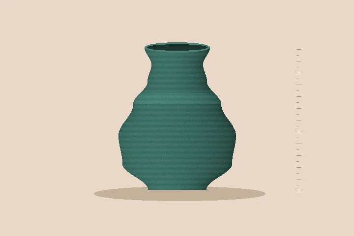
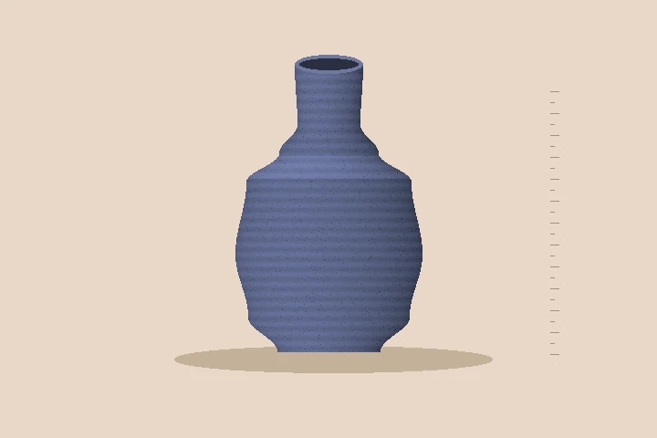
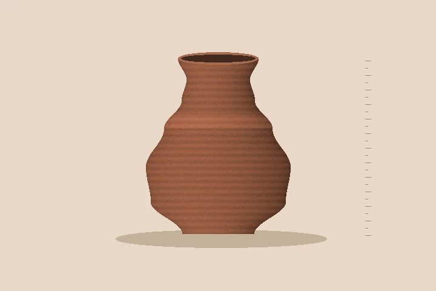
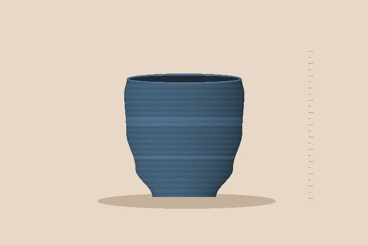
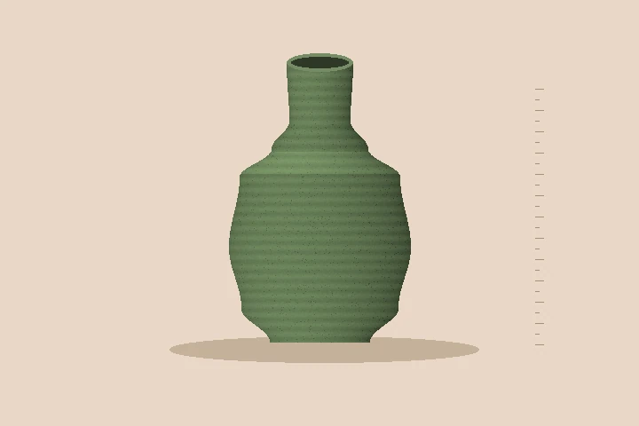

窑房器形表 · 属性矩阵
窑房器形表 · 属性矩阵
KILN ROOM / 器物台账
窑房器形表
每一列跟随一件器物。横着读，可在同一项属性上比较三者。
| 器形档案 |  收口罐 |
 深钵 深钵 |
 细颈瓶 |
|---|---|---|---|
| 器口 | 短颈收口 | 敞口外张 | 细颈小口 |
| 轮廓 | 圆肩 / 丰腹 | 直壁 / 收足 | 长颈 / 圆腹 |
| 最宽处 | 腹部下段 | 接近口沿 | 瓶身中段 |
| 初始釉 | 河青 | 铁红 | 紫灰 |
| 试验釉 | 赭红 | 蓝灰 | 苔绿 |
| 试釉图 |  |
 |
 |